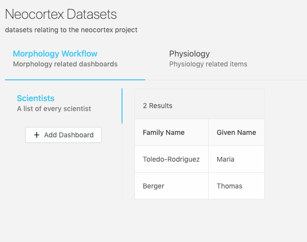
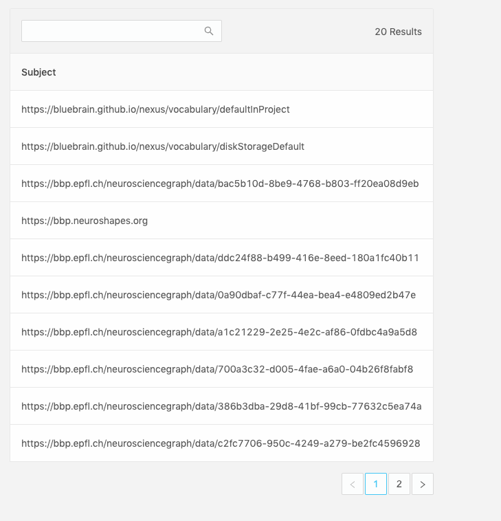
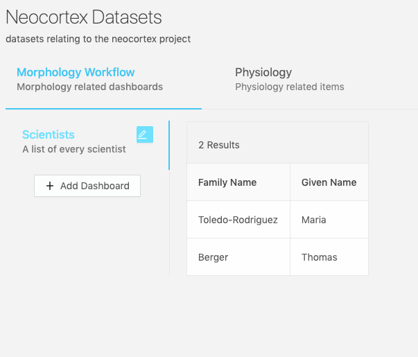

Dashboards
What is a dashboard?
A Dashboard is simply a query with a description and label. This will be used by the Workspace to query against the view paired with it inside the Workspace configuration. This way, you can write one query, and re-use it against multiple potential views.
An example Dashbaord resource looks like this:
{
"@context": "https://bluebrainnexus.io/studio/context",
"@type": "StudioDashboard",
"dataQuery": "prefix nxv: <https://bluebrain.github.io/nexus/vocabulary/>\nprefix s: <http://schema.org/>\nSELECT DISTINCT ?self ?familyName ?givenName\nWHERE {\n?s nxv:constrainedBy <https://neuroshapes.org/dash/person> ;\n nxv:self ?self ;\n s:familyName ?familyName ; \n s:givenName ?givenName\n}\nLIMIT 20",
"description": "A list of every scientist",
"label": "Scientists",
"plugins": ["nexus-plugin-example"]
}
The Dashboard, once configured, will present the results of your sparql query in a table. Each item in the row will be clickable and lead to a details page showing the Resource, in this case, a list of scientists that have contributed data to the project.

Plugins (Experimental!)
There’s also an experimantal plugin key in the configuration that can be used to load experimental nexus plugins. These plugins will be loaded into the Details page of a resource.
Creating a dashboard?
Inside any Studio View, under a selected Workspace, click the Add Dashboard button.

..and fill in a form providing the following:
Label: the name of your newDashboard(required field)Description: an optional description for yourDashboardPlugins: an optional list of plugins to add to the details page of a query resultSparql Query: a valid SPARQLquery that conforms to thedataQueryfield in the configuration.

You can click on the “view query in Sparql Editor” to open the
Sparql Editorin a new tab to work on your query while querying it against aSparql Viewin your project, so you can make sure it works and provides the fields you want. Then, you can copy and past that back in the form.
- Click
Saveand theDashboardand its query results should show up!
You can now also add this Dashboard to other Workspaces across the project.
Sparql Query Requirements
The ?self variable
In order for the UI to function as intended, you must provide a unique ID variable inside your Sparql statement, labeled as ?self. This will be used to generate the table and fetch resources when navigating to the details page of a row item. Ideally, this ?self variable should correspond with the _self of a target Resource of which to center your query against as a subject. The ?self variable will never be shown in the table, so you need some other variable in addition to view the results properly, or you’ll end up with a table without any rows.
Making queries visible
In addition to the ?self variable, you need to have at minimum one other one defined, which will be displayed on each row. The variable name will label the header of the table column, capitalized.
The minimum functioning query with the ?self variable defined:

# This is the minimum functioning query for Studio
prefix nxv: <https://bluebrain.github.io/nexus/vocabulary/>
SELECT DISTINCT ?subject ?self
WHERE {
?subject nxv:self ?self ;
}
LIMIT 20
Example Sparql Queries
Here’s an example of fetching unique Persons using https://schema.org properties.
prefix nxv: <https://bluebrain.github.io/nexus/vocabulary/>
prefix s: <http://schema.org/>
SELECT DISTINCT ?self ?familyName ?givenName
WHERE {
?s nxv:constrainedBy <https://neuroshapes.org/dash/person> ;
nxv:self ?self ;
s:familyName ?familyName ;
s:givenName ?givenName
}
LIMIT 20
Updating a dashboard?
You’ll find the edit Dashboard button by hovering over the label of a dashboard

Clicking that will lead you to a similar form as in the “Creating a dashboard?” section.
After your forms have been edited, simple click Save to update the changes.
Removing a dashboard?
You can remove a workspace by deprecating it from the Resource View